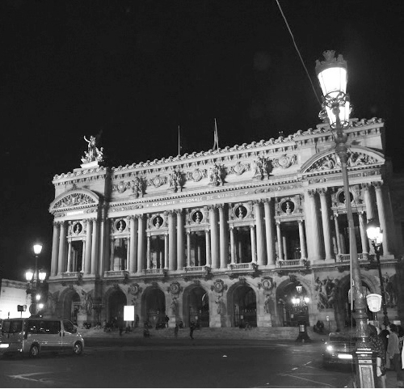

Từ ngày còn ở Hà Nội, tôi đã thích lang thang khu phố cổ về đêm. Sau này đi du học, tôi ít có điều kiện quay về Hà Nội nhưng mỗi lần quay về dù bận bịu thế nào tôi cũng cố dành một đêm dạo quanh Hà Nội để tự hào ghi nhận những đổi thay hay nghẹn ngào tiếc thương một điều gì xưa cũ không còn nữa... Hà Nội về đêm là vắng người qua lại, là lơ ngơ những góc phố cũ ghi dấu ấn trăm năm trong thanh bình và phát triển, là những hàng quán vỉa hè và những tiếng rao đêm. Hà Nội đêm là lúc những hào nhoáng, xa hoa đã đi ngủ, trở về với nét bình dị và cả lam lũ của những người lao động lúc trời khuya, những người dọn rác, những bác xích lô, những cô bán nước chè, ngô nướng.
Hà Nội phố cổ về đêm cũng giống như Paris thu nhỏ, những nét kiến trúc ấy, nhỏ hơn, đơn giản hơn, cái nét lãng mạn kiểu Pháp ướp lên hồn Tràng An nhẹ nhàng, giản dị. Có nhiều góc phố rất đặc trưng kiểu Pháp, nhưng tôi thích đoạn Tràng Tiền đi dọc lên Nhà hát lớn, đi dạo ở đấy, vừa thấm đẫm sương lạnh Hồ Hoàn Kiếm lại như nghe đâu đây tiếng sóng sông Hồng rì rào phía xa xa, vừa tráng lệ Tràng Tiền, rộng rãi Ngô Quyền lại nhỏ nhắn những Nguyễn Xí, Đinh Lễ, Nguyễn Khắc Cần. Và Nhà Hát Lớn hiện ra, giữa ngã tư, ngã năm rộng lớn, đủ khoảng trống để ta thấy hết cái đẹp của nó.
Nhà Hát Lớn, nếu so với bản mẫu của nó ở Paris thì có lẽ chỉ nên gọi là Nhà Hát Nhỏ nhưng tôi rất thích gọi ba tiếng “Nhà Hát Lớn”, trong nó dường như có cả sự khiêm nhường xen lẫn niềm tự hào của một dân tộc. Với tôi chỉ như thế cũng là lớn rồi, nó nhỏ nhưng đủ để người ta phải ngước nhìn, trân trọng.
Dĩ nhiên, tôi không để niềm tự hào ấy lấn át hết cảm giác thích thú của mình khi lần đầu đến Opéra de Paris, nhà hát quốc gia. Nhà hát Opéra de Paris cực kỳ tráng lệ và cổ kính sẽ khiến bạn đi từ ngạc nhiên này đến ngạc nhiên khác, từ tầm vóc và kiến trúc bên ngoài của nhà hát cho đến nội thất bên trong với cầu thang vòm cuốn, đèn, rèm mang dáng dấp của một cung điện, một học viện nghệ thuật thời xa xưa.

Mặt trước của Opera de Paris. (Ảnh: Tác giả)
Tôi đến đứng bên ngoài ngắm Nhà hát Opéra nhiều lần nhưng mới chỉ vào bên trong một lần duy nhất. Và nhớ mãi.
Hồi ấy tôi chuyển đến làm cho một công ty chuyên về năng lượng sạch. Công ty đang trong thời kỳ phát triển bùng nổ, tuyển hàng loạt nhân viên mới và mua nhiều công ty nhỏ ở Mỹ hay các nước châu Âu.
Đầu năm, để chào đón hàng loạt sự kiện và cũng là để nhân viên của các công ty con trên thế giới gặp mặt làm quen, họ tổ chức nhiều hoạt động văn hóa, du lịch ở Paris. Xem một vở hài kịch ở nhà hát quốc gia là một trong những hoạt động ấy. Vở hài kịch ngắn, vui nhộn trong một khung cảnh tráng lệ khiến mọi người đều ấn tượng. Khi kết thúc, tổng giám đốc tuyên bố bắt đầu một cuộc thi bất ngờ: thi hùng biện. Mỗi người sẽ phải bốc thăm một chủ đề đơn giản: cái kính, cái khăn, nụ cười, mái tóc... Có ba phút chuẩn bị, để rồi nói một bài về chủ đề ấy, phải dí dỏm vui vẻ nhưng cũng phải đồng thời giới thiệu về mình để mọi người làm quen. Ai cũng thi và tất cả mọi người cho điểm.
Tôi đã từng hùng biện khi còn là sinh viên ở Việt Nam trong một cuộc thi lớn của các trường đại học. Tôi thậm chí đã nói trước cả ngàn người và trước ống kính camera truyền hình trực tiếp. Nhưng đó là nói bằng tiếng Việt. Còn ở đây, tôi phải nói bằng tiếng Anh, phải thi với những người đến từ Anh, Mỹ và cả không ít nhân viên người Pháp đã từng làm việc nhiều năm ở London hay New York. Họ đều xuất phát từ các trường đại học danh tiếng của châu Âu và không hề xa lạ với việc hùng biện hay thuyết trình ngẫu hứng. Nhưng không sao, tôi sẽ cố gắng hết mình.
“Nụ cười” là chủ đề mà tôi bốc thăm được, quả thật rất hợp với tôi. Tôi nở một nụ cười thật tươi. Ở dưới mọi người cũng cười theo và tôi nghe thấy tiếng xì xào “Im lặng, để xem anh 'Trung Quốc’ làm tài chính suốt ngày cắm đầu vào số má này nói năng thế nào nào.” Tôi nhắm mắt lại, hít một hơi dài rồi ngẩng cao đầu tự tin bước tới micro và bắt đầu ngay, một cách ngẫu hứng. Tôi sẽ chép lại nguyên văn nội dung bài “hùng biện” đó của tôi, bởi tôi thấy nó phù hợp, bởi nó tóm tắt một phần câu chuyện du học của tôi, và cả những gì tôi muốn nói với bạn qua cuốn sách này:
“Chào mọi người, tôi sẽ nói gì về mình nhỉ. Không khó để thấy tôi là người châu Á, cái mắt cái mũi, ngữ điệu (accent) tiếng Anh của tôi khẳng định điều đó và đặc biệt là nụ cười. Tôi biết các bạn thường để ý đến nụ cười của người châu Á, tự hỏi tại sao người châu Á hay cười, và khi cười cặp mắt đã nhỏ của họ lại càng nhỏ hơn, chả nhìn thấy thế giới nữa, thế mà vẫn hay cười. Rồi tôi sẽ trở lại nói về nụ cười ấy.
Nhưng có một điều tôi muốn nói đến trước tiên: tôi là người Việt Nam, không phải người Trung Quốc, và tôi tự hào vì điều đó. Có một xu hướng chung ở Pháp và ở nhiều nước châu Âu là mọi người thường nghiễm nhiên quy đồng mọi thứ liên quan đến châu Á với Trung Quốc. Ngày Tết Trung quốc, quận của người Trung Quốc và khi trước mặt bạn là một người châu Á, nếu chưa có điều kiện nói chuyện, bạn sẽ thầm nghĩ trong đầu: “người Trung Quốc”. Điều ấy dễ hiểu nếu nhìn vào lượng người Trung Quốc trên toàn thế giới này. Đến nỗi con gái tôi mới ba tuổi đã bảo “Bố mẹ có đẻ thêm em bé nữa không? Nếu có thì chỉ đẻ thêm ba em nữa thôi nhé. Tại vì đứa thứ năm sẽ là người Trung Quốc đấy ạ. Cô giáo con bảo trên thế giới này, cứ năm người thì sẽ có một là người Trung Quốc ạ”. Còn tôi muốn nói với các bạn “Nếu bạn đã gặp bốn người châu Á, đều là người Trung Quốc cả, thì rất có thể, người thứ năm sẽ là tôi - một người Việt Nam. Chúng tôi, như các bạn, tự hào về nguồn gốc và nền văn hóa của mình, là rất riêng, là chỉ có một, xin hãy tôn trọng điều đó.”
Bây giờ thì tôi quay trở lại với nụ cười. Nụ cười thường trực trên môi người châu Á mà nhiều khi khiến bạn bực mình, không hiểu mình có mặc áo trái hay mặt mình có nhọ không mà thấy mặt mình là nó nhe răng ra cười, hoặc nó khoái chí vì làm gì “xỏ lá” mà mình không biết. Như người Paris thường nói “Người Trung Quốc cười vì chỉ có họ mới biết đã cho những gì vào trong cái nem bán cho mình ăn”. Thưa, lại nhầm nữa, nem là món đặc sản của Việt Nam đấy ạ! Nhưng tôi hiểu nỗi bực mình của bạn khi vào một nhà hàng châu Á, thấy anh bồi bàn đứng ở cửa, cười rất tươi “Xin chào, mời vào, cảm ơn”. Như thế thì bình thường, nhưng khi tìm mãi không có bàn trống, bạn quay lại hỏi, anh ta vẫn cười và bảo “Tất nhiên, mời vào, cảm ơn” và khi bạn đã phát cáu lên “Chết tiệt, thay vì cảm ơn hãy tìm cho tôi một chỗ ngồi” mà anh ta vẫn cười, vẫn cảm ơn thì quả là bực mình lắm.
Bạn có để ý rằng giữa những người châu Á họ thường ít cười hơn. Nếu bạn nhìn một nhóm người du lịch châu Á đứng nói chuyện với nhau thì họ không chỉ cười và cảm ơn nhau suốt ngày đâu. Thế thì tại sao họ hay cười với bạn thế?
Tôi chưa có điều kiện hỏi hết những người châu Á khác ở Paris, tôi sẽ chỉ kể cho bạn vài câu chuyện của tôi thôi nhé và bạn sẽ thử nghĩ xem tại sao tôi hay cười.
Tôi nhớ lúc mới sang du học ở Paris, chúng tôi phải đi sở cảnh sát để làm thẻ cư trú. Chắc các bạn đồng ý với tôi rằng đi làm giấy tờ ở Pháp là phải xếp hàng, tất nhiên thôi, đến đi ăn, đi cắt tóc còn xếp hàng nữa là các dịch vụ hành chính. Nhưng tôi đảm bảo với bạn rằng cái phòng làm thẻ cư trú cho người nước ngoài ở sở cảnh sát chắc chắn là nơi mà người ta phải chờ nhiều nhất. Có khi vào mùa đông, tôi chờ từ tối hôm trước, ngủ ngoài trời, đến trưa hôm sau vào đến cửa, chỗ phát vé vào làm thủ tục thì người ta bảo “ôi tiếc quá, vừa phát cái vé cuối cùng rồi, anh vui lòng về nhé, mai quay lại”. Thật ra thì tôi không muốn cười đâu.
Rồi đến hôm vào được bên trong, người ta bảo muốn làm thẻ cư trú thì phải chứng minh tài chính, tức là phải có tài khoản ngân hàng tại Pháp, đi mở tài khoản đi, mai quay lại nhé. Đến ngân hàng, người ta bảo “Muốn mở tài khoản ngân hàng thì phải có thẻ cư trú dài hạn, chứ ai mở tài khoản cho mấy anh đi du lịch, hay sinh viên chưa có thẻ cư trú. Đến sở cảnh sát lấy thẻ rồi quay lại đây“ Lúc ấy tôi cũng chả muốn cười. Nhưng tôi đã thức trắng đêm, lại vào sở cảnh sát, tiếng Pháp không nói được nhiều, cô cảnh sát thì chẳng thích nói tiếng Anh, tôi lại không muốn làm mất lòng cô, thì tôi còn làm gì nữa? Tôi chỉ biết cười thôi, ánh mắt năn nỉ và luôn miệng “cảm ơn”, “làm ơn”.
Anh bồi bàn mà bạn gặp lúc nãy, thật ra chính là tôi, tôi đi làm thêm để lấy tiền đi học. Tôi chỉ làm nhiệm vụ bưng đồ thôi, tôi đứng đấy chờ chủ gọi thì chạy đi bưng đồ, tôi vừa bắt đầu học tiếng Pháp, tôi không hiểu những gì bạn nói, tôi không nói được gì nhiều, thế thì bạn sẽ bực mình, đằng nào bạn cũng bực mình, thôi thì tôi cười, tôi cảm ơn để ít ra bạn không thể nói là tôi nhăn nhó hay tôi vô lễ, để ông chủ không bực mình mà đuổi tôi.
Rồi tôi đi học cao học ngành Tài chính, mà tiếng Pháp tôi vẫn còn kém, tôi phải mượn vở bạn bè để photo lại, thì tôi cười để bạn vui lòng cho tôi mượn, nghe giảng mà không hiểu thì tôi muốn hỏi lại, trước khi hỏi thì tôi cười để giáo viên khỏi khó chịu vì câu hỏi không được diễn đạt trôi chảy của tôi.
Đến khi tôi đi xin việc, tôi nói tiếng Pháp tốt rồi nhưng không thể tốt bằng những người Pháp đang cạnh tranh với tôi. Tuyển một người nước ngoài thì công ty, theo luật của nhà nước, phải giải trình với sở lao động lý do tuyển dụng người nước ngoài, trong khi người Pháp còn đang thất nghiệp đầy ra kia, công ty phải nộp phạt, phải chờ sáu tháng làm đủ thứ thủ tục mới nhận được tôi vào. Thế thì ngoài những khả năng, nỗ lực của mình tôi đã chứng tỏ hết cả, tôi còn gì nữa, còn có nụ cười thôi, tôi chả tiếc. Coi như là phần thưởng, là lời cảm ơn cho người tuyển dụng đã dũng cảm nhận tôi. Chỉ riêng việc người ấy, không phân biệt tôi là người nước ngoài, gọi tôi đến và cho tôi một cơ hội thì cũng đáng để tôi cảm ơn. Và tôi hài lòng, biết rằng cuộc đời này công bằng, rằng xã hội này phát triển thì không có chỗ cho phân biệt đối xử, vẫn có rất nhiều người tốt, cuộc đời vẫn đền đáp cho những người biết cố gắng, vẫn còn mỉm cười với tôi, thế thì hiển nhiên là tôi sẽ nở nụ cười.
Và bây giờ, tôi đứng trước mặt các bạn, tôi hài lòng lắm. Tôi được nghe các bạn tự kể về mình, ai cũng dí dỏm thông minh khiến tôi cười không ngớt. Tôi có cơ hội được chia sẻ chút tình cảm, văn hóa, học thức, nhất là chia sẻ tấm lòng của tôi thì chắc chắn là tôi rất vui. Những lúc khó khăn tôi sẽ cười để lòng nhẹ nhõm, để có niềm tin vào ngày mai, khi an lành thì hiển nhiên tôi sẽ hài lòng, và tôi muốn chia sẻ niềm yêu đời, yêu cuộc sống với tất cả mọi người. Các bạn thấy không, có bao nhiêu lý do để tôi cười.
Tôi kể với các bạn một câu chuyện nhỏ về nụ cười, để các bạn cười và tôi cũng cười, nhưng cũng để các bạn, nếu ai còn chưa biết, thì biết rằng đằng sau một nụ cười đôi khi là những câu chuyện về một cuộc đời, một nền văn hóa, đôi khi là nỗi đau và những giọt nước mắt. Với tôi, nụ cười là sự sẻ chia, là lời cảm ơn cuộc sống và là biểu tượng của niềm tin. Hãy cười với tôi nào. Xin cảm ơn.”
Bài hùng biện ấy của tôi, hãy đoán xem, có được đón nhận nồng nhiệt không?
Tôi đạt điểm trung bình 9,8/10, y như luận văn tốt nghiệp đại học ngày xưa và giành giải nhất, tất nhiên chỉ là giải phong trào thôi. Chẳng rõ mọi người có “nhân nhượng” chấm điểm cao cho tôi vì tôi “kể khổ” trong bài hùng biện hay không, nhưng ông Tổng giám đốc, sau này bảo tôi “Chưa bao giờ tôi được nghe cái gì thú vị như thế, chỉ mấy phút mà tóm tắt một quãng đời gian khó, biết cả xuất xứ, quốc tịch đến gia đình con cái. Có cả niềm tự hào dân tộc lẫn quan điểm sống. Vừa chỉ trích lại ca ngợi cái dở cái hay của xã hội. Và nhất là làm mọi người cười mà khóe mắt cay cay.”
Không hiểu sao tôi rất có “duyên” với những bài hùng biện và thường phải nói trước đám đông. Trước đây khi học đại học, tôi tham gia đội tuyển SV 96 của trường tôi. Trong trận chung kết, tôi đã hùng biện và trả lời các câu hỏi trước cả ngàn người và trước máy quay truyền hình trực tiếp. Sau này sang Pháp, tôi cũng là người dẫn chương trình cho các buổi biểu diễn của sinh viên, cho đêm nhạc của nhóm chúng tôi hay cho đám cưới của bạn bè.
Bạn có thể không cần, không phải tham dự thi hùng biện, không muốn làm người dẫn chương trình hay hoạt náo viên, nhưng bạn chắc chắn phải đối mặt với những cuộc phỏng vấn, phải trình bày một phần nào đó trong buổi họp ở công ty, phải bảo vệ luận văn tốt nghiệp hay chỉ đơn giản là tranh luận một vấn đề với bạn bè, đồng nghiệp, đó đều là những bài hùng biện, thuyết trình nho nhỏ.
Nhất là ở nước ngoài, từ trường học đến công ty, người ta rất hay yêu cầu bạn phải nói, phải diễn thuyết trước mặt mọi người. Điều này thì người châu Âu làm rất tốt, từ cách giáo dục đến đặc điểm cộng đồng khiến họ có sự tự tin trong giao tiếp và những kiến thức văn hóa xã hội tiếp cho họ thêm sức mạnh.
Các bạn có thể không tin: Xuất phát điểm của tôi là một người vô cùng nhút nhát. Nhát đến nỗi hồi cấp ba nếu phải lên phát biểu trước lớp thì ống quần tôi dù rất rộng cũng rung bần bật như cờ bay trước gió. Ngay cả khi học đại học, khi ngồi ở một quán ăn với bạn bè trường tôi và một trường đại học khác, phải phát biểu mấy câu và bị mọi người đề nghị đọc mấy câu thơ, tôi còn đứng không vững, vừa nói vừa bám vào bàn khiến bát đĩa trên bàn rung và kêu leng keng như có động đất nhẹ, ai cũng phải buồn cười.
Tôi biết là rất nhiều bạn cũng gặp không ít khó khăn khi phải đối mặt với những tình huống như thế, và tôi muốn chia sẻ cách tôi chiến thắng sự nhút nhát và sợ hãi của bản thân, kinh nghiệm của tôi để làm tốt phần “phát biểu” của mình:
Quan trọng nhất là sự chuẩn bị. Tùy theo thời gian có ít hay có nhiều mà tôi có cách chuẩn bị khác nhau. Nếu có nhiều thời gian, tôi thường viết ra những ý chính mình sẽ nói, chú ý đến trình tự logic và thời gian của từng điểm, rồi ghi nhớ. Chỉ viết gạch đầu dòng thôi, những thứ quan trọng nhất, không viết toàn bộ câu chữ để dành chỗ cho sự ngẫu hứng, tránh tình trạng diễn thuyết một cách vô hồn. Tất nhiên đấy là nếu bạn có “khẩu ngữ” tốt, có thể ứng đáp nhanh nhẹn và tìm từ chuẩn khi nói. Nếu không thì viết ra hết, học thuộc. Đọc trên giấy thì vẫn tốt hơn là đứng im không biết nói gì hoặc luôn thêm các đoạn “ờ…” sau mỗi cụm từ. Nếu không đủ thời gian thì tôi viết rất nhanh các ý chính, vạch ra trong đầu những gì sẽ nói. Cái cốt lõi là câu mở đầu và trình tự: cái gì nói trước, cái gì nói sau. Nếu bạn đã nói câu mở đầu tốt, thường thì sau đó sẽ thuận lợi và ngược lại. Còn sắp xếp trình tự những ý sẽ nói giúp bạn tránh sự trùng lặp, lúng túng và thiếu chặt chẽ trong lập luận. Cách thức và sự nghiêm túc trong việc chuẩn bị tỷ lệ thuận với sự thành công và sự tự tin khi nói. Tôi không coi thường một câu nói nào cả, ngay cả bây giờ, khi đã có thể nói rất tốt và không nhút nhát nữa, nhiều khi chỉ phải đến gặp ai để nói một câu gì đó, tôi cũng nghĩ trước xem mình sẽ nói gì và nói như thế nào. Không phải ngẫu nhiên mà người ta bảo “uốn lưỡi bảy lần mới nói.” Việc bạn chuẩn bị để nói tốt từng câu trong đời thường là tiền đề để bạn có thể thuyết trình hàng tiếng đồng hồ mà không sợ vấp váp.
Sự tập trung cũng là yếu tố then chốt. Trước bài diễn thuyết của mình, tôi thường tìm một chỗ yên tĩnh, nhắm mắt lại, hít thật sâu. Chỉ cần vài giây, có khi là vài phút. Nếu có ít thời gian thì khâu chuẩn bị của tôi được làm luôn. Trong khi nói cũng cần sự tập trung cao độ. Khi đang nói một câu, tôi đã nghĩ đến câu sau mình sắp nói. Thường thì tôi nhìn thấy những gì mình sắp nói hiện ra trước mắt. Tập trung cũng là cách bạn vượt qua sự sợ hãi, nhút nhát lúc ban đầu. Nếu như bạn còn run trong khi nói thì nên chọn một vật gì đó để nhìn, để không bị bối rối vì ánh mắt hay cái nhăn mặt của ai đó. Nhưng như vậy thì không được lịch sự lắm. Người nói phải có sự trao đổi ánh mắt với người nghe, dù chỉ là hình thức. Vì thế điểm bạn chọn không nên ở gần bạn quá, khiến đầu bạn cúi gằm hay mắt luôn nhìn xuống. Trước đây tôi hay chọn một điểm ở cuối phòng, và khi cần tôi nhìn vào đó, nhìn mà không nhìn. Nhìn để tránh bị phân tâm bởi những “nháo nhác” xung quanh, không nhìn chòng chọc vào đó để không lộ ra là mình không nhìn người nghe, để không trở nên cứng nhắc. Dần dần, tự tin hơn, tôi bắt đầu thực sự nhìn “khán giả” của mình, nhìn một cách có chọn lọc, tức là chỉ nhìn những ai tỏ ra hứng thú và tập trung, điều đó tiếp thêm cho bạn sức mạnh. Rồi thì tôi nhìn tất cả mọi người.
Để một bài “diễn thuyết” trở nên hấp dẫn và có hồn, hãy làm cho nó trở nên hóm hỉnh, hài hước một chút (nhưng đừng quá đà thành trò lố bịch). Nụ cười luôn được đón nhận, ở bất cứ đâu, ngay cả trong một buổi họp của các nguyên thủ quốc gia. Nói một câu dí dỏm không khó, chỉ thay đổi thêm bớt vài từ, hoặc nói đến những thứ đơn giản mà mọi người không để ý đến, khiến họ bị bất ngờ là đã làm người nghe thấy cuốn hút. Tôi cũng thường cố gắng “cài” vào bài “diễn thuyết” của mình sự quan tâm của tôi đến người nghe, khán giả. Tôi điều chỉnh “nhịp độ” của tôi theo thái độ của người nghe và tôi nói với họ điều đó, kiểu như “Tôi vừa nhìn thấy một vài ánh mắt có ý 'thúc giục' của các bạn (mỉm cười), và tôi sẽ 'tăng tốc' nhé, nếu tôi nói nhanh quá, hãy ra hiệu cho tôi, cảm ơn các bạn.” Một câu đó vừa thể hiện sự quan tâm của tôi, vừa là lời nhắc nhở những ai không tập trung. Vậy thôi, những yếu tố quan trọng để bài diễn thuyết của tôi thành công thường nhờ vào mấy điều này. Tất nhiên với điều kiện là ta phải nắm rõ chủ đề của mình, có kiến thức chắc chắn về những gì ta nói, vì có thể còn phải trả lời các câu hỏi nữa. Kiến thức mở về xã hội và các vấn đề thời sự cũng là những điểm nhấn thêm, khiến những gì bạn nói trở nên sinh động với người nghe.